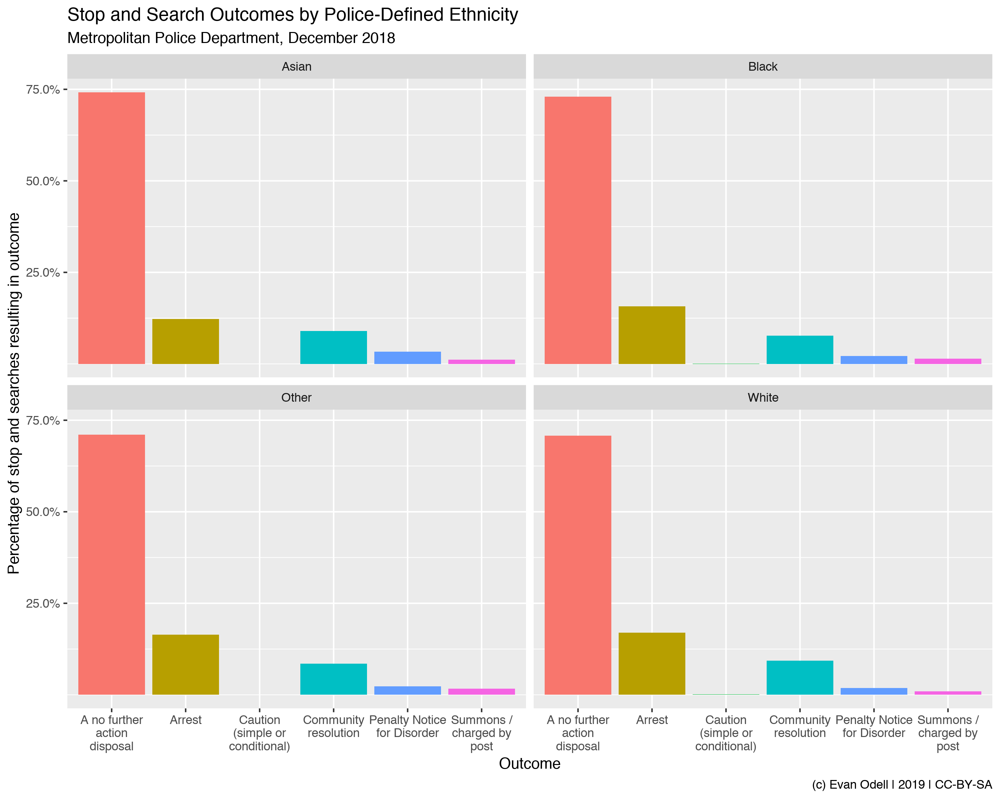

../docs/vignettes/introduction.Rmd
introduction.RmdThe ukpolice package downloads data from the UK Police public data API, the full docs of which are available at https://data.police.uk/docs/.
The API uses a ‘leaky bucket’ rate limiter, which allows for 15 requests per second with a burst of 30. This allows for 15 requests each second, but up to 30 in a single second at one go. The API does not require authentication.
Data is available on police forces, crimes, policing areas and stop-and-search. All functions begin with ukc_.
The example below queries stop and searches by the Metropolitan Police in December 2018, and plots them by police-reported ethnic group.
library(ukpolice) library(ggplot2) library(dplyr) london_ss <- ukc_stop_search_force("metropolitan", date = "2018-12") london_ss2 <- london_ss %>% filter(!is.na(officer_defined_ethnicity)) %>% group_by(officer_defined_ethnicity, outcome) %>% summarise(n = n()) %>% mutate(perc = n/sum(n)) p1 <- ggplot(london_ss2, aes(x = outcome, y = perc, group = outcome, fill = outcome)) + geom_col(position = "dodge") + scale_y_continuous(labels = scales::percent, breaks = seq(0.25, 0.8, by = 0.25)) + scale_x_discrete(labels = scales::wrap_format(15)) + theme(legend.position = "none") + labs(x = "Outcome", y = "Percentage of stop and searches resulting in outcome", title = "Stop and Search Outcomes by Police-Defined Ethnicity", subtitle = "Metropolitan Police Department, December 2018", caption = "(c) Evan Odell | 2019 | CC-BY-SA") + facet_wrap(~officer_defined_ethnicity) p1
